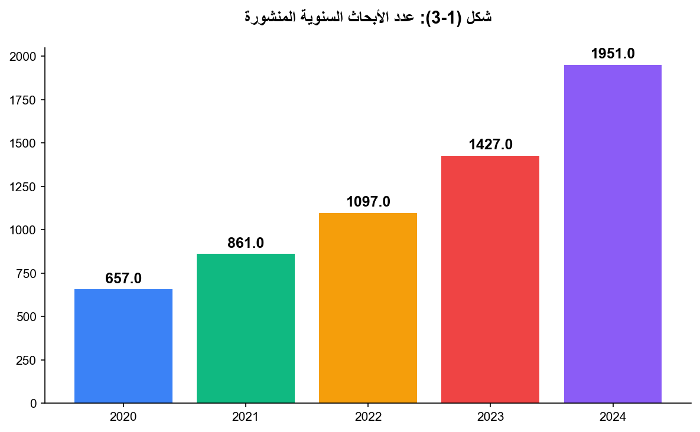

3.1: عدد الأبحاث المنشورة في SCOPUS و ISI
هناك زيادة ملحوظة في عدد الأبحاث المنشورة في محرك سكوبس Scopus للأعوام 2023/2024، وذلك بسبب السياسات المعتمدة لتحفيز الباحثين على النشر، ويوضح الشكل (1-3) والشكل (2-3) أدناه عدد الأبحاث السنوية المنشورة على النحو الآتي:

شكل (1-3): عدد الأبحاث السنوية المنشورة
هناك زيادة ملحوظة في عدد الأبحاث المنشورة في محرك سكوبس Scopus للأعوام 2023/2024، وذلك بسبب السياسات المعتمدة لتحفيز الباحثين على النشر، ويوضح الشكل (1-3) والشكل (2-3) أدناه عدد الأبحاث السنوية المنشورة على النحو الآتي:
شكل (2-3): العدد التراكمي السنوي للأبحاث المنشورة
هناك زيادة ملحوظة في عدد الأبحاث المنشورة في محرك سكوبس Scopus للأعوام 2023/2024، وذلك بسبب السياسات المعتمدة لتحفيز الباحثين على النشر، ويوضح الشكل (1-3) والشكل (2-3) أدناه عدد الأبحاث السنوية المنشورة على النحو الآتي:
جدول (3-1): مؤشرات أداء البحث العلمي لعام 2024
| indicator | value |
|---|---|
| عدد الأبحاث المنشورة الكلي 2024 | 1871 |
| عدد الاستشهادات الكلي | 18187 |
| مؤشر الإتش h-index (scopus) | 60 |
هناك زيادة ملحوظة في عدد الأبحاث المنشورة في محرك سكوبس Scopus للأعوام 2023/2024، وذلك بسبب السياسات المعتمدة لتحفيز الباحثين على النشر، ويوضح الشكل (1-3) والشكل (2-3) أدناه عدد الأبحاث السنوية المنشورة على النحو الآتي:
جدول (3-2): قائمة بالأبحاث المنشورة في Scopus للعام 2024
| num | authors | title | year | journal | volume | issue |
|---|---|---|---|---|---|---|
| Ishtaiwi A.; Al Khaldy M.A.; Al-Qerem A.; Aldweesh A.; Almomani A. | Artificial intelligence in cryptographic evolution: Bridging the future of security | 2024 | Innovations in Modern Cryptography | |||
| Albataineh A. | The effect of remittances on poverty and economic growth in jordan: evidence from augmented autoregressive distributed lag model | 2024 | Technological and Economic Development of Economy | 30 | 6 | |
| Al Hwaitat A.K.; Fakhouri H.N. | Adaptive Cybersecurity Neural Networks: An Evolutionary Approach for Enhanced Attack Detection and Classification | 2024 | Applied Sciences (Switzerland) | 14 | 19 | |
| Alhaj O.A.; Jrad Z.; Oussaief O.; Jahrami H.A.; Ahmad L.; Alshuniaber M.A.; Mehta B.M. | The characterization of Lactobacillus strains in camel and bovine milk during fermentation: A comparison study | 2024 | Heliyon | 10 | 21 | |
| Mohammad A.A.S.; Khanfar I.A.A.; Al-Daoud K.I.; Odeh M.; Mohammad S.I.; Vasudevan A. | Impact of perceived brand dimensions on Consumers' Purchase Choices | 2024 | Journal of Ecohumanism | 3 | 7 | |
| Mohammad A.A.S.; Alolayyan M.N.; Al-Daoud K.I.; Nammas Y.M.A.; Vasudevan A.; Mohammad S.I. | Association between Social Demographic Factors and Health Literacy in Jordan | 2024 | Journal of Ecohumanism | 3 | 7 | |
| Zaidalkilani A.T.; Al-kuraishy H.M.; Fahad E.H.; Al-Gareeb A.I.; Elewa Y.H.A.; Zahran M.H.; Alexiou A.; Papadakis M.; AL-Farga A.; Batiha G.E.-S. | Autophagy modulators in type 2 diabetes: A new perspective | 2024 | Journal of Diabetes | 16 | 12 | |
| Lestari U.; Salam S.; Choo Y.-H.; Alomoush A.; Al Qallab K. | Automatic prediction of learning styles: a comprehensive analysis of classification models | 2024 | Bulletin of Electrical Engineering and Informatics | 13 | 5 | |
| Abu-Safe H.H.; Al-Adamat K.; Oliveira F.M.; Mazur Y.I.; Alhelais R.; Refaei M.; Esaifan M.; Ware M.E. | Composite nanofilms of graphene and nickel: Fabrication, cw linear and nonlinear optical properties | 2024 | Applied Surface Science | 670 | ||
| Alhaj O.A.; Elsahoryi N.A.; Fekih-Romdhane F.; Wishah M.; Sweidan D.H.; Husain W.; Achraf A.; Trabelsi K.; Hebert J.R.; Jahrami H. | Prevalence of emotional burnout among dietitians and nutritionists: a systematic review, meta-analysis, meta-regression, and a call for action | 2024 | BMC Psychology | 12 | 1 | |
| Almuhur E.; Al-Labadi M.; Qousini M.; Bashir R. | Strongly Dαp-closed graphs in bitopological spaces | 2024 | International Journal of Advanced and Applied Sciences | 11 | 9 | |
| Jaware T.H.; Nayak C.; Parida P.; Ali N.; Sharma Y.; Hadi W. | Enhanced Neonatal Brain Tissue Analysis via Minimum Spanning Tree Segmentation and the Brier Score Coupled Classifier | 2024 | Computers | 13 | 10 | |
| Al-Qerem W.; Jarab A.; Hammad A.; Eberhardt J.; Alasmari F.; Alkaee S.M.; Alsabaa Z.H.; Al-Ibadah M. | The association between health literacy and quality of life of patients with type 2 diabetes mellitus: A cross-sectional study | 2024 | PLoS ONE | 19 | 10 | |
| Issa S.S.; Tabash M.I.; Ahmed A.; Riyadh H.A.; Alnahhal M.; Varma M. | Investigating the Relationship between Energy Consumption and Environmental Degradation with the Moderating Influence of Technological Innovation | 2024 | Journal of Risk and Financial Management | 17 | 9 | |
| Matar N.; Al-Jaber A.; Matar W. | Unlocking Business Intelligence and Data Analytics Adoption Patterns: Insights from Jordanian Higher Education Institutions | 2024 | Engineering, Technology and Applied Science Research | 14 | 5 | |
| Hussein N.M.; Al-Musawi T.J.; Kumar N.; Sharma R.; Mohammed A.I.; Sharma I.; Kalyani T.; Dehghanipour M.; Sandhu A. | The first and cost-effective nano-biocomposite znpor/rgo/tio2 as efficient UV photocatalysts for ethylparaben decomposition | 2024 | Inorganic Chemistry Communications | 170 | ||
| Tabash M.I.; Farooq U.; Issa S.S. | BRIC in flux: Understanding the influence of energy policy uncertainty on foreign direct investment flows | 2024 | OPEC Energy Review | 48 | 4 | |
| Ibrahim O.M.; Al Mazrouei N.; Elnour A.A.; Ibrahim R.; Abdel-Qader D.H.; El Amin Ibrahim Hamid R.M.; Menon V.; Saeed A.A.; Abdalla S.F.; Alsulami F.T.; Alqarni Y.S.; Mohammed A. | Randomized controlled trial parallel-group on optimizing community pharmacist’s care for the elderly: The influence of whatsapp-Email delivered clinical case scenarios | 2024 | PLoS ONE | 19 | 10 | |
| Al-Hakim M.; Hanna I.M.; Sameer I.S.; Samer Z.; Mohammad A.B. | Ijara Ending with Ownership (Lease) A Case Study of Jordanian Islamic Banks | 2024 | Journal of Ecohumanism | 3 | 7 | |
| AL-Hashimi N.N.; Alomoush Q.K.; El-Sheikh A.H.; Alsakhen N.A.; Barri T.; Abdelghani J.I.; Alqudah A.M. | A new Fe3O4-mwcnts-reinforced hollow fiber solid/liquid phase microextraction-based natural deep eutectic solvent for determination of trace phthalate esters in aqueous samples using HPLC–DAD | 2024 | Chemical Papers | 78 | 18 | |
| Ishtaiwi A.; Al-Shamayleh A.S.; Fakhouri H.N. | A Hybrid JADE–Sine Cosine Approach for Advanced Metaheuristic Optimization | 2024 | Applied Sciences (Switzerland) | 14 | 22 | |
| Alhasan R.F.; Huwari I.F.; Alqaryouti M.H.; Sadeq A.E.; Alkhaldi A.A.; Alruzzi K.A. | Confronting English Speaking Anxiety: A Qualitative Study of Jordanian Undergraduates at Zarqa University | 2024 | Journal of Language Teaching and Research | 15 | 6 | |
| Nwasra N.; Daoud M.; Qaisar Z.H. | ANFIS-AMAL: Android Malware Threat Assessment Using Ensemble of ANFIS and GWO | 2024 | Cybernetics and Information Technologies | 24 | 3 | |
| E’Leimat D.; Al-Daoud K.I.; Vasudevan A.; Mohammad A.A.S.; Hunitie M.F.A.; Fei Z. | The impact of corporate governance on the financial performance of banks | 2024 | Uncertain Supply Chain Management | 12 | 4 | |
| Zaidalkilani A.T.; Al-Kaby A.H.; El-Emshaty A.M.; Alhag S.K.; Al-Shuraym L.A.; Salih Z.A.; Taha A.A.; Al-Farga A.M.; Ashmawi A.E.; Hamad S.A.; Abd El-Raouf H.S.; Ahmed S.E.; El-Taher A.M.; Chamba M.V.M.; Badawi T.A. | Effect of Salt Stress on Botanical Characteristics of Some Table Beet (Beta vulgaris L.) Cultivars | 2024 | ACS Omega | 9 | 48 | |
| Adwan S.; Al-Akayleh F.; Qasmieh M.; Obeidi T. | Enhanced Ocular Drug Delivery of Dexamethasone Using a Chitosan-Coated Soluplus®-Based Mixed Micellar System | 2024 | Pharmaceutics | 16 | 11 | |
| Al-Akayleh F.; Alkhawaja B.; Al-Zoubi N.; Abdelmalek S.M.A.; Daadoue S.; AlAbbasi D.; Al-Masri S.; Ali Agha A.S.A.; Olaimat A.R.; Woodman T. | Novel therapeutic deep eutectic system for the enhancement of ketoconazole antifungal activity and transdermal permeability | 2024 | Journal of Molecular Liquids | 413 | ||
| Huwari I.F.; Erkir S.; Alkhaldi A.A.; Royani I. | Analysis of Endophoric Reference in Lewis Carroll's Alice in Wonderland | 2024 | Forum for Linguistic Studies | 6 | 5 | |
| Al Khaldy M.A.; Al-Qerem A.; Aldweesh A.; Alauthman M. | A general framework for metaverse based on parallel computing and HPC | 2024 | Indonesian Journal of Electrical Engineering and Computer Science | 35 | 3 | |
| Abuarqoub D.; Aburayyan W.; Rashan L.; Dayyih W.A.; Al-Matubsi H.Y. | Phytochemical analysis and in vitro investigation of wound healing, cytotoxicity, and inflammatory response in potentially active extracts of Anogeissus dhofarica | 2024 | Journal of Applied Pharmaceutical Science | 14 | 10 | |
| Fakhouri H.N.; Alawadi S.; Awaysheh F.M.; Alkhabbas F.; Zraqou J. | A cognitive deep learning approach for medical image processing | 2024 | Scientific Reports | 14 | 1 | |
| Elsahoryi N.A.; Odeh M.M.; Alsous M.; Kastero D.H.; Al-Mughrabi L.F.; Darras S.A.; Aljahdali A.A. | Adolescents with Diabetes, exploring Knowledge, Attitude, and Practice: A Cross-Sectional Analytical Study | 2024 | Pharmacy Practice | 22 | 4 | |
| Mahmoud I.F.; Mahmoud K.F.; Elsahoryi N.A.; Mahmoud A.F.; Othman G.A. | Impact of associated factors and adherence to Mediterranean diet on insomnia among Arab men living in Jordan | 2024 | Scientific Reports | 14 | 1 | |
| Al-Ani I.H.; Hailat M.; Mohammed D.J.; Matalqah S.M.; Abu Dayah A.A.; Majeed B.J.M.; Awad R.; Filip L.; Abu Dayyih W. | Development and Evaluation of a Cost-Effective, Carbon-Based, Extended-Release Febuxostat Tablet | 2024 | Molecules | 29 | 19 | |
| Amayreh M.; Esaifan M.; Hourani M.K. | A sensitive and selective voltammetric method for the detection of pyrogallol in tomato and water samples using platinum electrode modified with alizarin red S film | 2024 | Analytical Sciences | 40 | 9 | |
| Abu Jadayil S.M.; Alsaed A.K.; Mahmoud I.F.; Ahmad L.M.; Afaneh F.; Khalaf H.; Soudi M.Z. | Proximate analysis and vitamin B contents of fresh-made, canned chickpea and broad bean dips commercially produced in Jordan | 2024 | PLoS ONE | 19 | 12 | |
| Al Hwaitat A.K.; Fakhouri H.N. | Hybrid Artificial Protozoa-Based JADE for Attack Detection | 2024 | Applied Sciences (Switzerland) | 14 | 18 | |
| Elsahoryi N.A.; Olaimat A.; Abu Shaikha H.; Tabib B.; Holley R. | Food safety knowledge, attitudes and practices (KAP) of street vendors: a cross-sectional study in Jordan | 2024 | British Food Journal | 126 | 11 | |
| Al Shaker H.A.; Barry H.E.; Hughes C.M. | Stakeholders' perspectives about challenges, strategies and outcomes of importance associated with adherence to appropriate polypharmacy in older patients – A qualitative study | 2024 | Exploratory Research in Clinical and Social Pharmacy | 15 | ||
| Alauthman M.; Aljuaid H.; Sathyaprakash P.; Aldweesh A.; M A.; Rasheed T.; Jumani A.K. | Unintended Data Behaviour Analysis Using Cryptography Stealth Approach Against Security and Communication Network | 2024 | Mobile Networks and Applications | 29 | 6 | |
| Al-Maseimi O.D.; Elsahoryi N.A.; Alhaj O.A.; Ahmad L.; Abbas M.M.; Zurkieh S. | Food-Related Risks: To What Extent Are Married Jordanian Women (Non-Pregnant, Pregnant and Postpartum) Knowledgeable About These Risks and Their Corresponding Practices? | 2024 | Safety | 10 | 4 | |
| Al-Akayleh F.; Alkhawaja B.; Al-Remawi M.; Al-Zoubi N.; Nasereddin J.; Woodman T.; NisreinJaber; Ahmad M.I.A.; AbuQatouseh L.; Omari D.; Agha A.S.A.A. | An Investigation into the Preparation, Characterization, and Therapeutic Applications of Novel Gefitinib/Capric Acid Deep Eutectic Systems | 2024 | Journal of Pharmaceutical Innovation | 19 | 6 | |
| Elsahoryi N.A.; Maghaireh G.A.; Hammad F.J. | Understanding dental caries in adults: A cross-sectional examination of risk factors and dietary behaviors | 2024 | Clinical Nutrition Open Science | 57 | ||
| Ibrahim Hamzah A.; Hussein N.M.; Hazim Salem K.; Krishna Saraswat S.; Kaur M.; Kaur H.; Hammadi khaleel E.; Abbas M.; Zainul R. | Adsorption behavior of hydroxyurea drug on pristine, Si, and Ge-doped carbon nitride nanosheet: A computational study | 2024 | Inorganic Chemistry Communications | 170 | ||
| Audeh W.; Moradi H.R.; Sababheh M. | Matrix Hölder inequalities and numerical radius applications | 2024 | Linear Algebra and Its Applications | 696 | ||
| Abu Qaadan A.; Hamad F.; Fakhouri H. | Facilitating digital accessibility for students with disabilities into information services at Jordanian academic libraries | 2024 | Library Management | 45 | 9-Aug | |
| Albataineh A.K.F.; Harb A.S.M.; Alnajjar A.H.; Alhaj R.S. | Evaluating the impact of business incubators on promoting growth and creativity in women’s projects in Jordan | 2024 | International Journal of Management and Sustainability | 13 | 4 | |
| Osman H.A.; Abuhamdah S.M.A.; Hassan M.H.; Hashim A.A.; Ahmed A.E.; Elsayed S.S.; El-Sawy S.A.; Gaber M.A.; Abdelhady M. | NLRP3 inflammasome pathway involved in the pathogenesis of metabolic associated fatty liver disease | 2024 | Scientific Reports | 14 | 1 | |
| Fakhouri H.N.; Al-Shamayleh A.S.; Ishtaiwi A.; Makhadmeh S.N.; Fakhouri S.N.; Hamad F. | Hybrid Four Vector Intelligent Metaheuristic with Differential Evolution for Structural Single-Objective Engineering Optimization | 2024 | Algorithms | 17 | 9 | |
| Khurshid N.; Butt N.A.; Fiaz A.; Issa S.S.; Tabash M.I.; Al-Absy M.S.M. | Do Climate Change Matter for Agricultural Production in an era of Globalization? Empirical Insights from Pakistan | 2024 | International Journal of Energy Economics and Policy | 14 | 5 | |
| ... و 404 صف إضافي | ||||||
هناك زيادة ملحوظة في عدد الأبحاث المنشورة في محرك سكوبس Scopus للأعوام 2023/2024، وذلك بسبب السياسات المعتمدة لتحفيز الباحثين على النشر، ويوضح الشكل (1-3) والشكل (2-3) أدناه عدد الأبحاث السنوية المنشورة على النحو الآتي:
جدول (3-3): نسبة النشر في Scopus و Google Scholar
| year | scopus_ratio | google_ratio | notes |
|---|---|---|---|
| 2024 | 1.9 | 2.5 | لكامل العام |
| 2023 | 1.01 | 1.7 | لكامل العام |
| 2022 | 0.94 | 1.52 | لكامل العام |
| 2021 | 0.76 | 1.46 | لكامل العام |
| 2020 | 0.57 | 1.47 | لكامل العام |
| 2019 | 0.33 | 1.15 | لكامل العام |
| 2018 | 0.33 | 1.08 | لكامل العام |